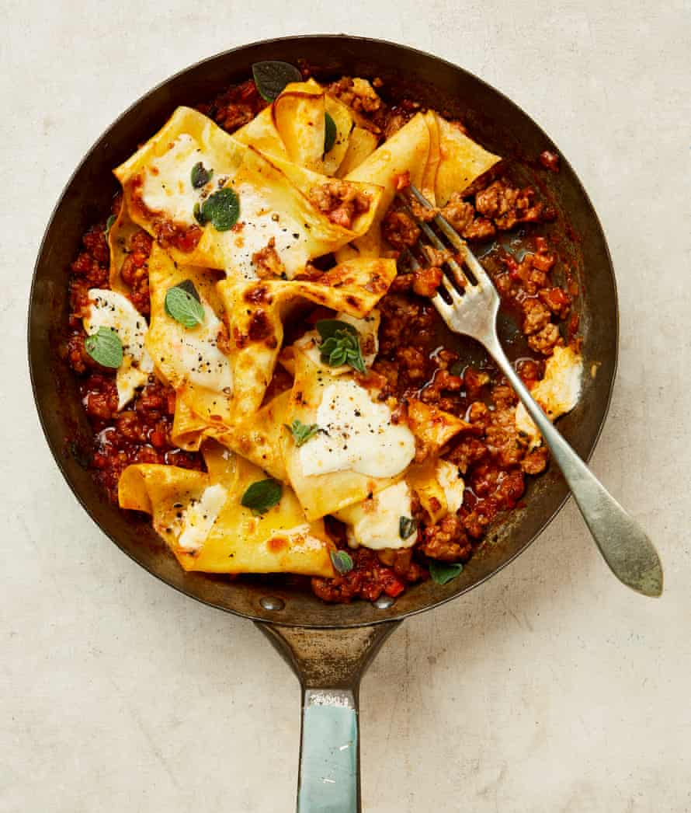

Sausage ragu lasagne

This has all the delights of lasagne without all the prep time or the making of numerous portions. And you don’t have to worry about missing out on getting a nice, crisp-edged corner piece, either. To make this vegetarian, swap the sausage for firm tofu or mushrooms.
Put a 17cm saute pan on a medium-high heat. Once hot, add the oil, sausagemeat, carrot, shallot, thyme and three-quarters of the oregano, and cook, stirring often, for 15 minutes, until lightly golden; use the spoon to break up the sausagemeat into smaller pieces. Add the garlic and fennel seeds, cook for two minutes more, until fragrant, then stir in the tomatoes and cook for five minutes until bubbling.
Add 200ml boiling water to the pan with a good grind of pepper and a half-teaspoon of salt, turn down the heat to medium and simmer for 15 minutes, until the sauce has thickened and looks glossy. Heat the grill to its highest setting. Fill a medium saucepan with a litre of water, add a tablespoon of salt and bring up to a simmer. Add the pasta sheets, cook for two minutes, then drain in a colander.
Tear or cut the lasagne sheets in half, then stir them into the ragu. Simmer for two minutes, stirring occasionally, until the pasta is soft and nicely coated in the sauce. Using a spoon, lift and arrange the sheets so they sit in folds, like little handkerchiefs nestling in the sauce. Roughly tear the mozzarella and place between and on top of the layers of lasagne.
Put the pan under the hot grill for five to seven minutes, until the cheese is bubbling and some of the lasagne sheets have crisp edges. Serve straight from the pan with the rest of the oregano scattered on top.